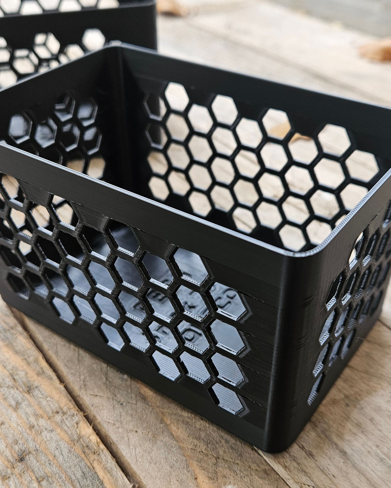
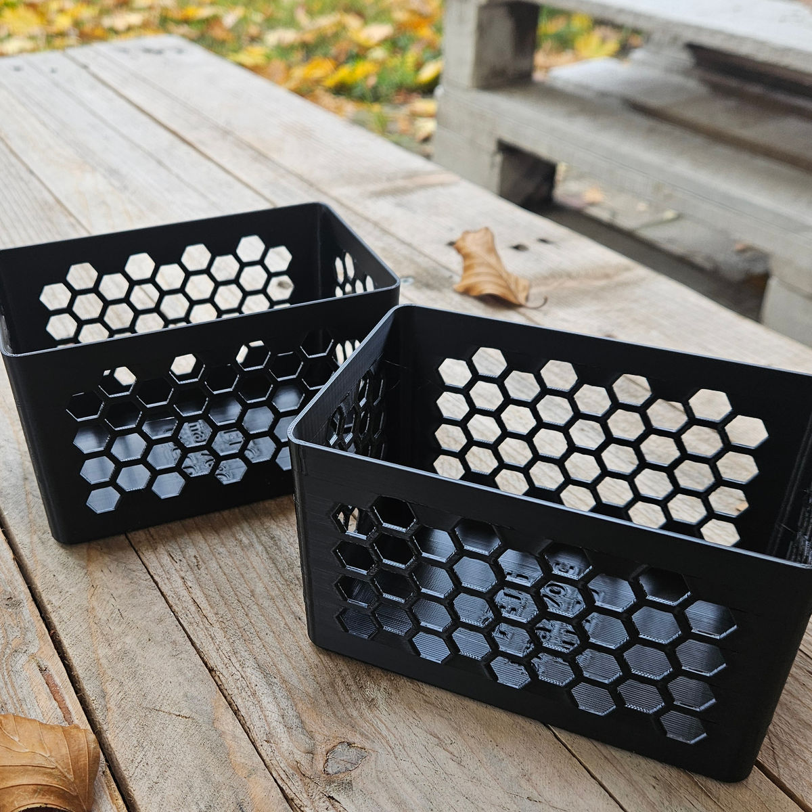
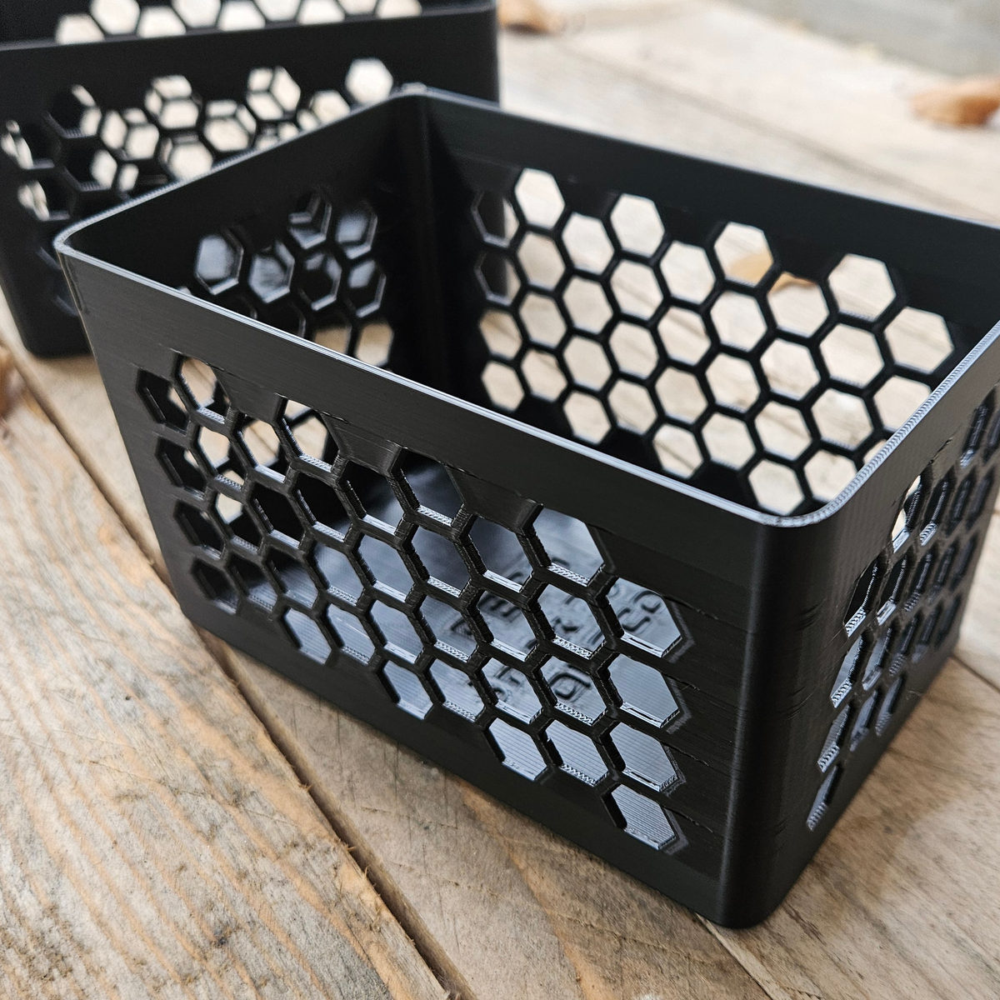
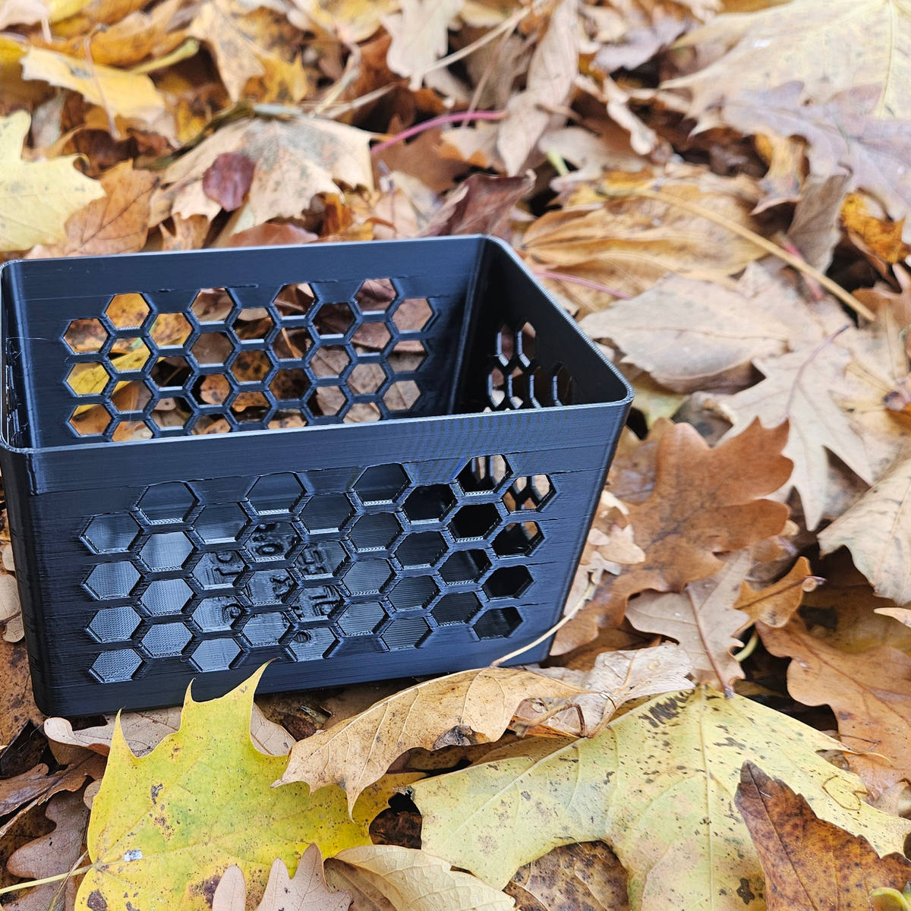

Pudełka do kosza cargo 15 cm
Organizery Queco mają obrys 87 × 135 × 80 mm i są drukowane z czarnego PETG. Zaprojektowano je pod wąski, wysuwany kosz cargo 15 cm (m.in. Delinia z Leroy Merlin). Saszetki stoją pionowo i nie przewracają się przy wysuwaniu. Dwa warianty: zwykły (ażur w plaster miodu) oraz na przyprawy (2 przegródki). Komplet trzech pudełek wypełnia jedną półkę.

Najważniejsze cechy
Dopasowana szerokość
Szerokość 87 mm odpowiada wnętrzu kosza cargo 15 cm. Pudełko nie przesuwa się na boki, a trzy sztuki obok siebie zajmują 405 mm. Starsze modele 100 mm i 89 mm do tego kosza nie pasują i nie są w ofercie.
Ażurowe ścianki
Otwory w kształcie plastra miodu pozwalają zobaczyć zawartość, a okruchy i woda nie zalegają na dnie. Wariant zwykły waży 71,9 g (masa bryły; slicer zwykle pokazuje o 2–5% więcej).
Łatwe w utrzymaniu
Zaokrąglone narożniki wewnątrz ułatwiają czyszczenie. Myć ręcznie w letniej wodzie. PETG jest odporny na wilgoć i środki czystości, do ok. 70 °C. Nie myć w zmywarce.
Dwa warianty, jeden wymiar
Oba warianty mają te same wymiary zewnętrzne 87 × 135 × 80 mm i powstają z czarnego PETG w technologii druku 3D. Na ściankach widać delikatne linie warstw — to cecha tej technologii, a nie wada. Górna krawędź jest prosta, bez wycięcia na palec.
| Wymiary | 87 × 135 × 80 mm (szer. × dł. × wys.) |
|---|---|
| Na półkę | komplet 3 szt., 405 mm długości |
| Materiał | Czarny PETG, do ok. 70 °C (oznaczenie na dnie: PETG / max 70 °C) |
| Oznaczenie | Na dnie: materiał, maks. temperatura i napis QUECO |
| Masa (bryła) | zwykły 71,9 g; przyprawy 109,4 g |
| Produkcja | druk 3D na zamówienie, Kołobrzeg |
Zwykły (plaster miodu)
Jedna komora, ażurowe ścianki. Na słoiczki, butelki, saszetki i chemię w opakowaniach.
Przyprawy (2 przegródki)
Dwie wzdłużne przegródki, czyli trzy komory. Saszetki stoją grzbietem do góry, nazwy widać po wysunięciu kosza.
Ceny mogą ulec zmianie. Aktualna cena i koszt wysyłki są podane w ofercie na Allegro.
Ważne: pudełko nie posiada certyfikatu do kontaktu z żywnością. Przeznaczone jest do produktów w opakowaniach: saszetek, słoiczków, butelek i puszek. Nie należy myć go w zmywarce ani ustawiać w pobliżu piekarnika lub płyty grzewczej.



Zdjęcia pokazują wcześniejszy wydruk (inny kolor). W sprzedaży jest czarny PETG, 87 × 135 × 80 mm. Nowe zdjęcia produktu zostaną podmienione po sesji.
Do jakiego kosza pasuje?
Każdy obsługiwany kosz ma kod w formacie SKLEP-numer kosza-długość, podany w tytule oferty. Przykład: LM-80053050-135 oznacza Leroy Merlin, kosz nr 80053050, pudełko 135 mm.
| Sklep | Kosz cargo 15 cm | Kod Queco | Na półkę |
|---|---|---|---|
| Leroy Merlin | Delinia iD, kosz cargo boczny 15 cm | LM-80053050-135 | 2 szt. (półka jest płytka, zmierz głębokość) |
| Leroy Merlin | Delinia iD, kosz cargo dolny 15 cm | LM-…-135 | 3 szt. |
| Castorama | GoodHome Pebre 150 mm | CA-3663602480143-135 | 3 szt. (wchodzą na styk) |
| OBI | Rejs Cargo dolne ELEMENT mini 15 cm (grafit / biały) | OBI-2191182749028-135OBI-2191182749097-135 | 3 szt. |
Przed zakupem warto zmierzyć półkę od wewnątrz. W najwęższym miejscu, między drutami lub ściankami, potrzeba co najmniej 88 mm. Komplet 3 sztuk wymaga 40,5 cm długości.
Producenci koszy nie podają wymiarów wnętrza półki, dlatego pewność daje tylko pomiar. W przypadku innego kosza wystarczy przesłać jego wymiary wewnętrzne. Nazwy Delinia, GoodHome, Rejs oraz nazwy sklepów podano wyłącznie w celu określenia zgodności. Queco nie jest powiązane z tymi firmami.
QU + ECO
Skąd nazwa Queco
QU jak kubik, czyli pudełko. Stąd kostka w literze U w logo. ECO, bo produkcja ogranicza zbędne odpady:
- Druk na zamówienie w Kołobrzegu. Bez magazynu pełnego plastiku i bez transportu z drugiego końca świata.
- Czarny PETG — sztywny, odporny na wilgoć, do ok. 70 °C. Nie kruszy się tak jak typowy PLA.
- Opakowanie z kartonu i papieru, bez folii bąbelkowej i styropianu.
- Ażurowe ścianki to mniej materiału: 71,9 g tworzywa na wariant zwykły (masa bryły).
Jak kupić
- Zmierz półkę kosza cargo od wewnątrz. Wymagana szerokość to min. 88 mm, a na komplet 3 sztuk — 40,5 cm długości.
- Wybierz wariant (zwykły albo przyprawy) oraz 1 sztukę na próbę lub komplet 3 sztuk na całą półkę.
- Złóż zamówienie na Allegro. Pudełka drukowane są na zamówienie z czarnego PETG, wysyłka następuje w ok. 3 dni robocze.
Inny kolor albo nietypowy kosz należy uzgodnić mailowo przed zakupem.